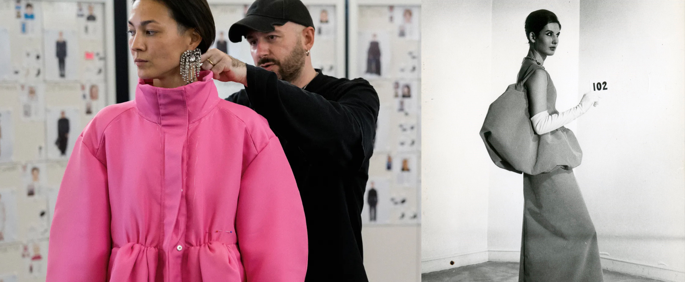
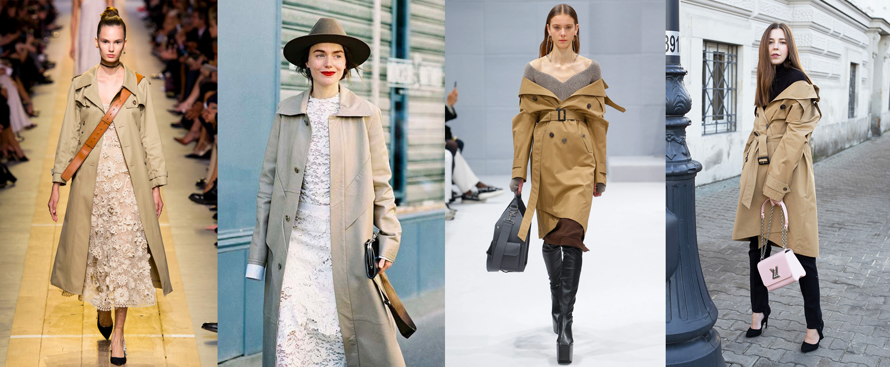
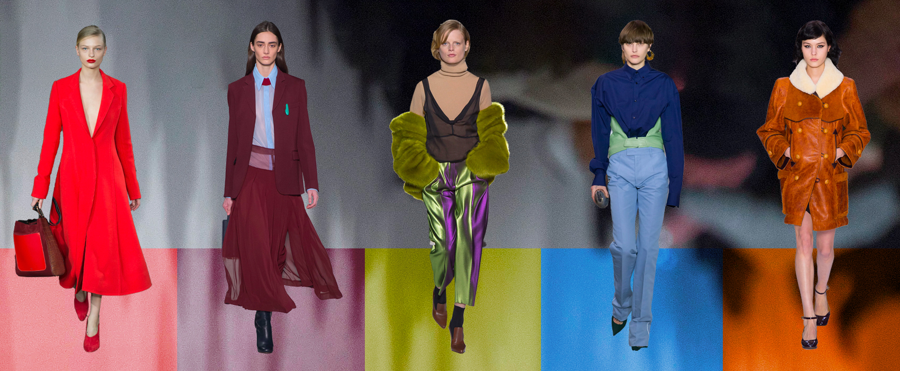

NEW LUXURY, BALENCIAGA
발렌시아가(Balenciaga)의 콜라보레이션과 '신상'출시는 늘 전 세계를 들썩이게 한다.뎀나 즈바살리아(Demna Gvasalia)가 디렉팅을 맡은 후 사람들이 생각하는 '일반적인' 럭셔리와 점점 멀어져가는 발렌시아가.
정통적이고 명성 있는 파리의 오트쿠튀르 하우스에서 탈피해 평범하길 거부하는 브랜드 '발렌시아가'는 지금 럭셔리의 기준을 흔들고 있다. 2017.11.12 미STORY
view more

TRENCH COAT STYLING
가을하면 가장 먼저 떠오르는 아이템 트렌치코트!클래식 아이템의 대표 주자로 매시즌 꾸준히 등장하지만 어떻게 연출하느냐에 따라 충분히 트렌디하고 다양한 룩을 완성할 수 있다.
2017 F/W 시즌 스타일링 포인트는 이질적인 요소의 결합을 통해 신선한 느낌을 주는 것.
누구나 가지고 있을 법한 베이직한 디자인의 트렌치코트를 활용하여 색다른 스타일링을 완성해보자. 2017.09.10 미STORY
view more

2017 F/W COLOR TREND
세계적인 색채 전문기업 팬톤에서 제시한 2017 가을/겨율 트렌드 컬러.따뜻하고 익숙한 컬러들로 구성되어 누구나 부담없이 연출할 수 있다는 것이 특징이다.
나에게 어울리는 트렌드 컬러를 활용해 대담하고 매력적인 가을/겨울 스타일을 즐겨보자. 2017.11.12 미STORY
view more
